Rhizomatic
A site-responsive textile installation. Chicago Botanic Garden (2024); Austin Central Library (2025).
Exhibition Overview
Rhizomatic is a site-responsive textile installation. Each iteration is built around the plants of its venue and draws on the rhizome as a philosophical figure for non-hierarchical, multi-rooted connection (after Deleuze and Guattari).
Awards & Support
Chicago Botanic Garden
Commissioned Artist
City of Austin
Elevate Grant Recipient
UNESCO
City of Media Arts Grant
Exhibition History
Chicago Botanic Garden
Regenstein Fruit & Vegetable Garden and the Farm on Ogden • June 1 – September 22, 2024
Medium: Installation art, digital prints on linen, photography, collage, graphic design, and illustration
Rhizomatic is a collaborative art installation between Essentials Creative collective and the scientists and staff at the Chicago Botanic Garden. The project is inspired by the rhizome as a philosophical concept developed by theorists Deleuze and Guattari. The installation weaves together cultural and scientific stories about diversity and collaboration. Featured plants in the artwork include ginkgo biloba, pawpaw, horsetail, white sage, eastern prairie fringed orchid, kernza, and amaranth. We aim to contribute to multicultural perspectives on plants, share the Garden's scientific research, and explore rhizomes as a metaphor for interconnectedness.
Austin Central Library
Roof Garden (6th Floor) • October 2–8, 2025
An installation of 20 double-sided tapestries on native Tejas plants, presented at the Austin Central Library Roof Garden, October 2–8, 2025. Each tapestry pairs botanical imagery with cultural and ecological reference.
Featured Texas Native Plants:
- Maguey — sustaining plant of arid Mesoamerica; food, drink, and fiber
- Nopal — prickly pear cactus; food and medicine across the Tejas–México borderlands
- Purple Coneflower — Tejas wildflower long used in traditional medicine
- Amaranth — sacred grain in pre-conquest Mesoamerican cuisine; revived contemporary food source
- Chili Pequin — wild Tejas pepper; foundational to Indigenous and Tex-Mex cuisines
Featured Works
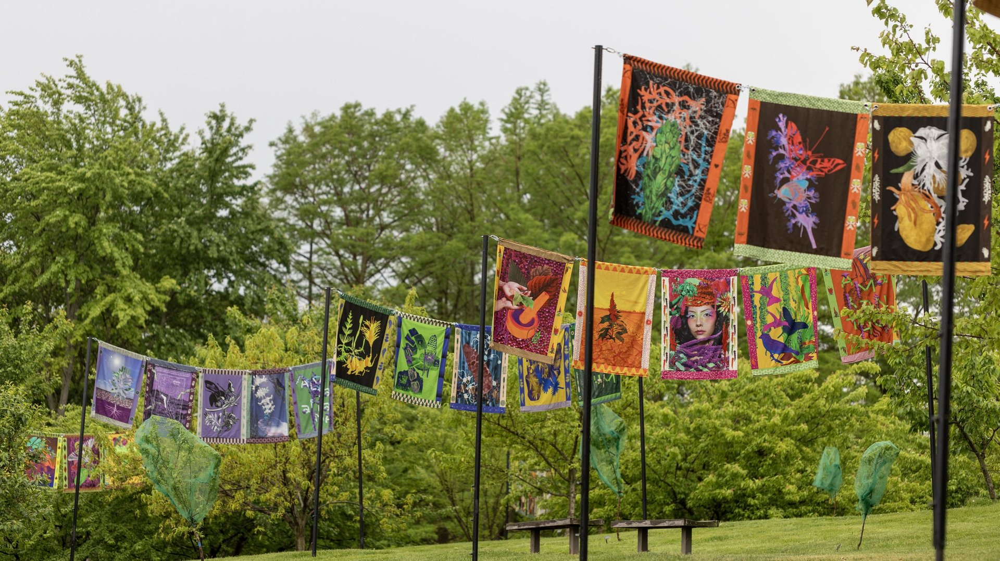
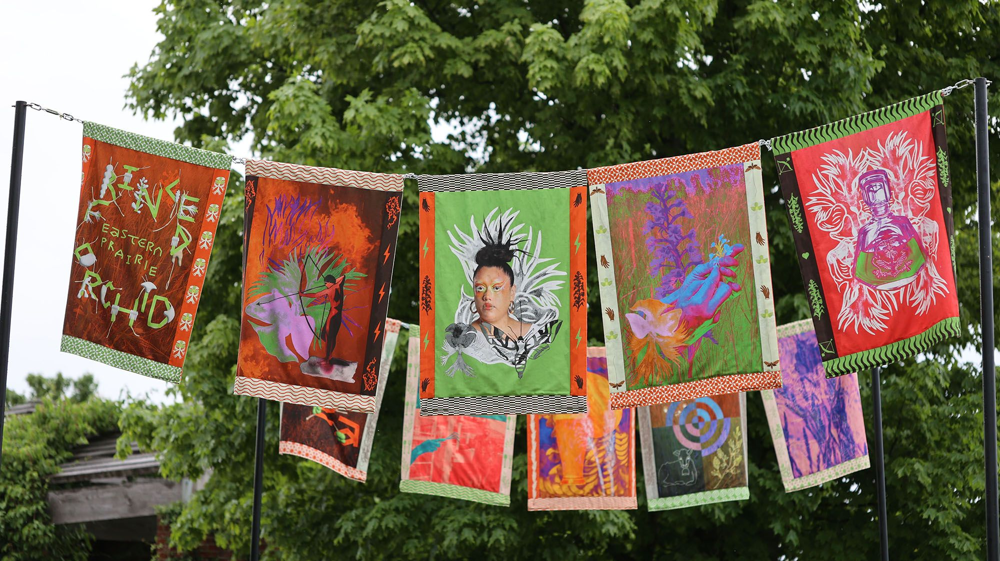
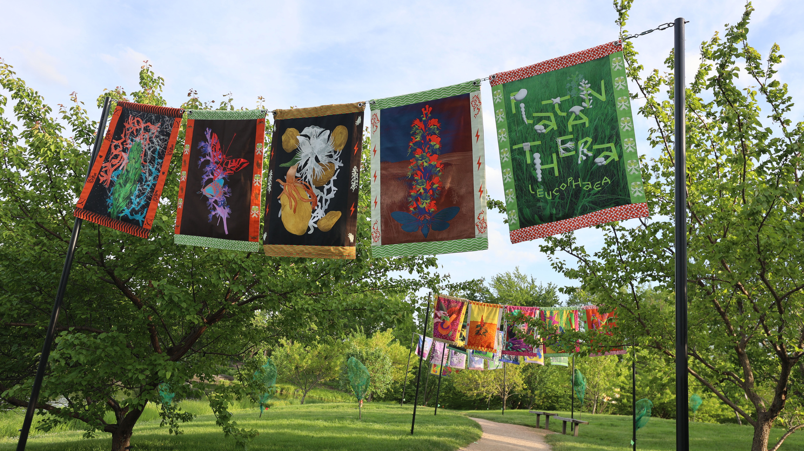
Installation Documentation
Explore our immersive installations across different venues and cultural contexts
Chicago Botanic Garden

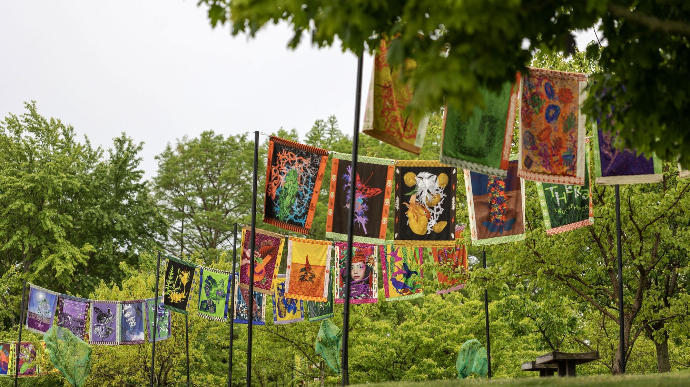
Austin Central Library
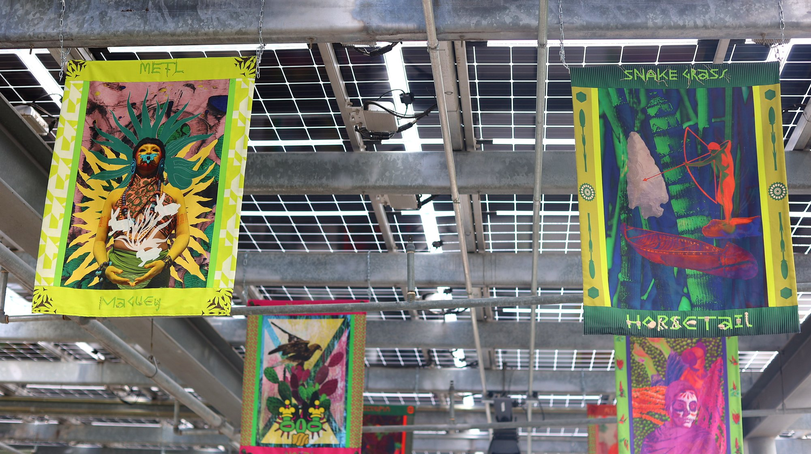
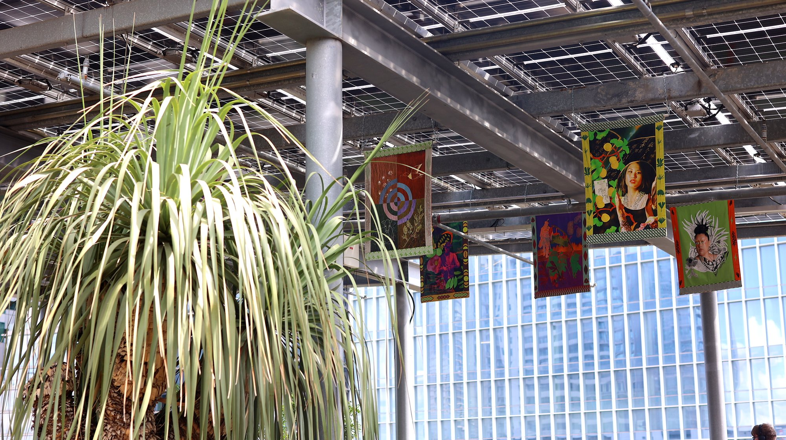
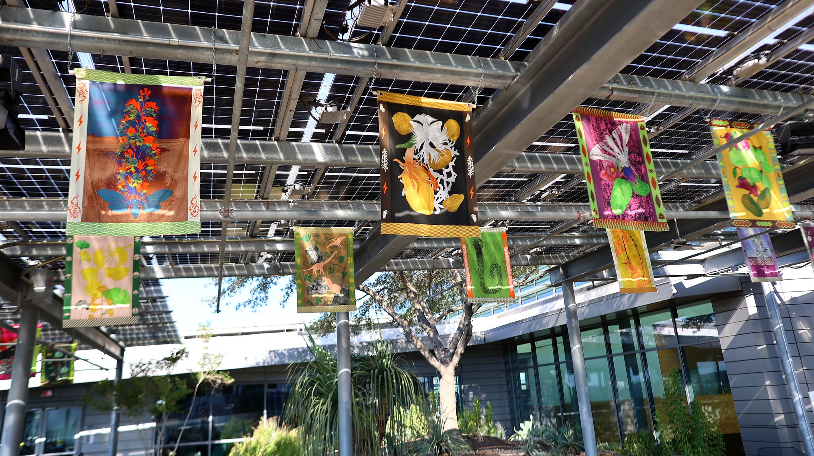
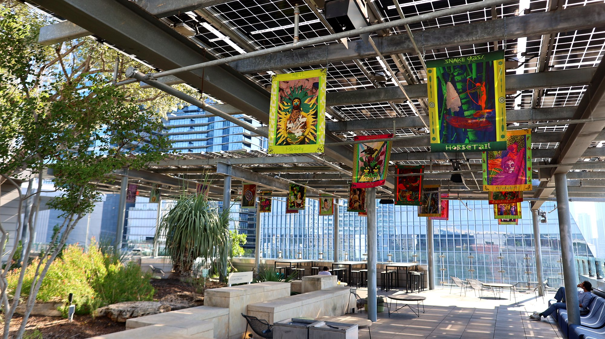
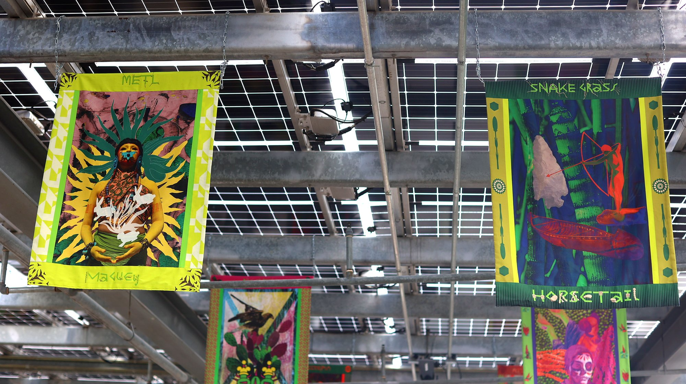
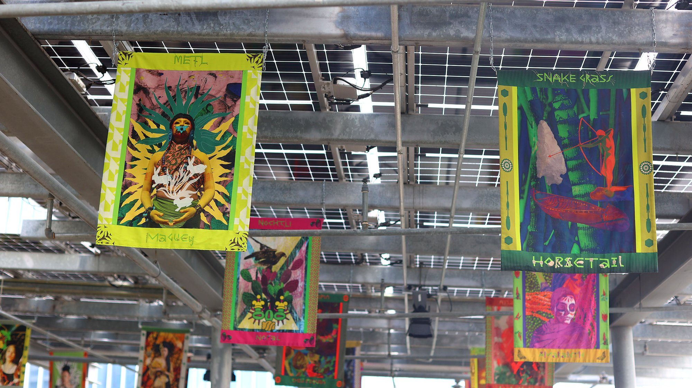
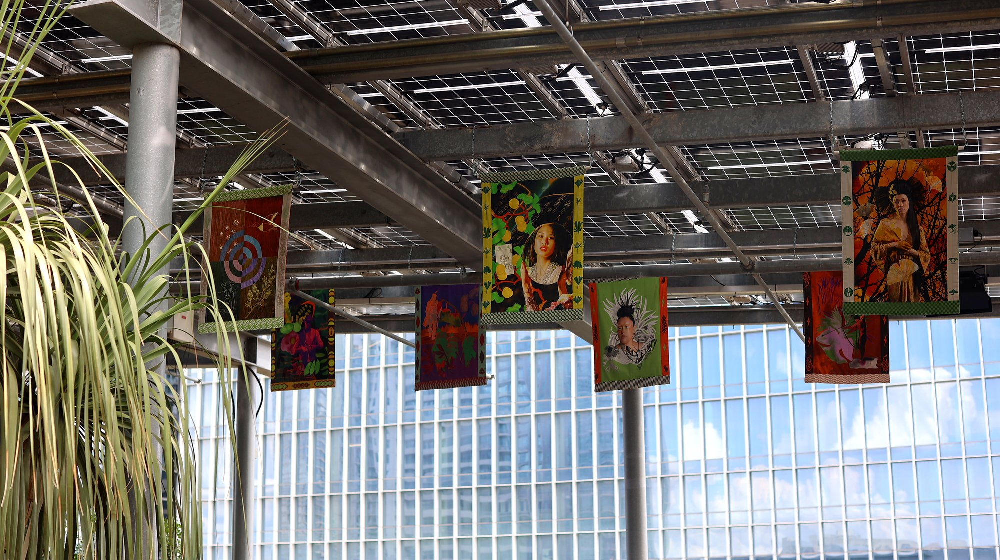
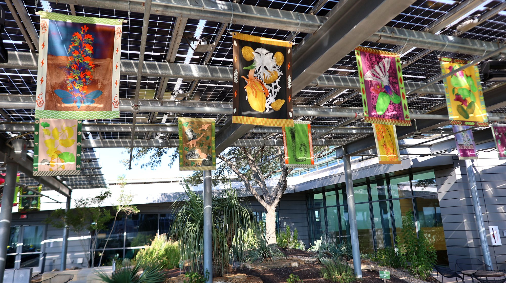
High-resolution images and complete documentation available upon request
About Essentials Creative
Essentials Creative: Indigenous American, Latin American, and Asian artists creating new narratives about belonging and place. We blend cultural reclamation with artistic innovation, building contemporary folklore that honors the past while imagining alternative relationships with Texas landscapes.
Our collaborative multimedia installations bridge cultural knowledge systems with contemporary artistic practice, creating spaces for cultural dialogue and environmental awareness through immersive experiences that have been exhibited at major botanical gardens, libraries, and cultural institutions across the United States.
Learn more about the collective →Contact
For exhibition inquiries, technical specifications, or educational programming:
essentialscreative@gmail.com